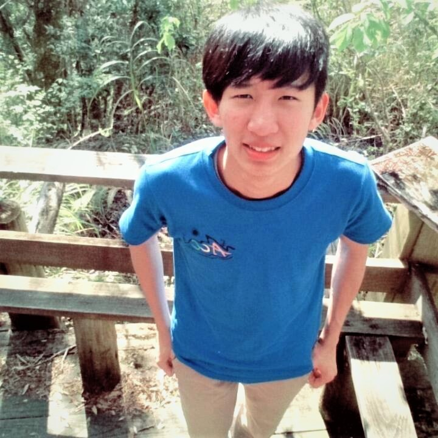

公司職員簡介
姓名 : 吳翊銓
職稱 :2016假日營公隊股長 2017養老、抬耀小隊長
入社年份 : 2015-2017
特殊表現 : 摔車斷齒賺保險金、最強吉他手、中分頭年代感、清大邰智源、抬耀清盤大師
員工表現

家林
你不說我還真不知道你是股長哈哈哈，甚至覺得你是長的比較老的大一菜逼八，很高興劇一有你們三個帶，每次的股聚都玩得很開心，我的大一生活真的過得很充實! 噢還有別想逃，你跟吳政鴻的黑有得比<3
匿名
一拳兒辛苦你們兩個小隊長當初帶我們到抬耀替我們把屎把尿的日子了啊！每次只要想到你們也快要畢業了就覺得怎麼那麼快我明明就還很年輕，喜歡抬耀不止是因為那邊的人事物，有一部份也是因為有你們，總之畢業快樂！
張宸寧
跟你上山很開心祝你畢業快樂
張瑋
猶記當初是心懷忐忑填抬耀表單，很怕自己被拒絕或難以融入，感謝你和筱婷選擇了我們，帶我們認識抬耀。你實在是一個有趣又負責的小隊長。做事總是全力以赴，而且盡量縮小個人以團隊考量優先。恭喜你即將畢業了，預祝日後學業事業通通順心。
匿名
每次在路上久違的巧遇就會打從心裡感到開心，畢竟要在原文的活動遇見你真的不容易哈哈哈，很開心你是劇一的股長，不遺餘力的幫我們想戲和搞笑，那時得股聚真心很愉快，那那祝你畢業快樂啊~
珊羽
當初大一進原文進劇一剛好有你做股長，才有機會跟你求教了些工工系上的事情，雖然愈大愈不容易遇到你，但專題展有去玩了你的面相AR，真的很酷餒， 畢業快樂啦。
源芳
一拳超人要畢業了呢~~想當初完全是下學期加了抬耀才知道原文有你這個人哈哈哈不要打我XD雖然你呆呆的但其實做事起來都很認真很凱瑞!真的很謝謝你帶我們上山讓我們在抬耀的時光總是特別歡樂~~以後有機會還要一起上山然後你騎車要小心XD